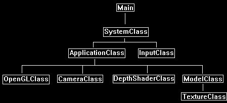

In OpenGL 4.0 the depth buffer (also called the Z buffer) is primarily used for recording the depth of every pixel inside the viewing frustum.
When more than one pixel takes up the same location the depth values are then used to determine which pixel to keep.
However, usage of the depth buffer is very flexible and it can be used to do many different things.
Most video cards come with a 32-bit depth buffer; it is then up to you how you want to use those 32 bits.
If you look at the SystemClass::InitializeWindow function you will see how we set the depth buffer format.
We use the depth buffer as both a depth buffer and a stencil buffer, and the format of the buffer is set to 24 bits for the depth channel and 8 bits for the stencil channel.
Also, we can actually define how the depth buffer functions.
In our current setup we discard pixels that are further than the current pixel.
However, this can be modified to do whatever we want to create different effects.
You have complete control over how this buffer functions.
The depth buffer values are floating point.
The range is from 0.0f to 1.0f with 0.0 set at the near clipping plane and 1.0 set at the far clipping plane.
However, the floating-point values in the depth buffer are not in a linear distribution.
Approximately 90% of the floating-point values occur in the first 10% of the depth buffer close to the near clipping plane.
The remaining 10% (from 0.9f to 1.0f) take up the last 90% of the depth buffer.
The following diagram shows the value distribution with black representing 0.0f and white representing 1.0f.
You will notice at the halfway mark I put a 0.5 but you will see the color is almost 99.999% white showing the lack of precision at that distance:

Also, if we want to look at it from a 3D scene perspective take for example the following scene:

Now if we just render the objects with their depth value as their color you will see the close cube object has a decent range of color and the sphere is almost completely white with little detail:

The reason the depth buffer is setup this way is because the majority of applications want a lot of precise detail up close and are not as concerned about precision with distant objects.
If distance is important in your application, then you may run into issues with distant objects that are close together overlapping causing pixels to flicker (also called Z fighting).
There are a number of well-known solutions to this issue but it comes at a cost depending on your implementation.
In this tutorial we are going to look at just rendering a simple 10 float unit plane and coloring it based on the depth information.
We will color the portion that is closest to the screen as red, then the next small portion as green, and then finally the remainder to the far clip plane as blue.
The reason we are doing this is to show you a way of performing detail calculations with depth.
This will allow you to extend the technique to do things such as normal mapping things that are close and then as they get distant you can move to just regular diffuse lighting.
Also note that depth buffers can be used for so much more, one example being projective shadow mapping, but we are going to just start with the basics.
Framework
The frame work for this tutorial has just the basics with a new class called DepthShaderClass which will handle the depth shading.
Also, the ModelClass won't use textures since we are just coloring depth using manual pixel colors.

We will start the code section of the tutorial by examining the GLSL depth shader first.
Depth.vs
////////////////////////////////////////////////////////////////////////////////
// Filename: depth.vs
////////////////////////////////////////////////////////////////////////////////
#version 400
/////////////////////
// INPUT VARIABLES //
/////////////////////
in vec3 inputPosition;
in vec2 inputTexCoord;
in vec3 inputNormal;
For input into the pixel shader, we will need the vertex position in homogeneous clip space stored in the position variable as usual.
However, since the defined gl_Position offsets the position by 0.5 we will need a second set of coordinates called depthPosition that are not modified so that we can perform depth calculations.
//////////////////////
// OUTPUT VARIABLES //
//////////////////////
out vec4 depthPosition;
///////////////////////
// UNIFORM VARIABLES //
///////////////////////
uniform mat4 worldMatrix;
uniform mat4 viewMatrix;
uniform mat4 projectionMatrix;
////////////////////////////////////////////////////////////////////////////////
// Vertex Shader
////////////////////////////////////////////////////////////////////////////////
void main(void)
{
// Calculate the position of the vertex against the world, view, and projection matrices.
gl_Position = vec4(inputPosition, 1.0f) * worldMatrix;
gl_Position = gl_Position * viewMatrix;
gl_Position = gl_Position * projectionMatrix;
As described in the pixel shader input, we store a second pair of position coordinates that will not be offset which will be used for depth calculations.
// Store the position value in a second input value for depth value calculations.
depthPosition = gl_Position;
}
Depth.ps
////////////////////////////////////////////////////////////////////////////////
// Filename: depth.ps
////////////////////////////////////////////////////////////////////////////////
#version 400
/////////////////////
// INPUT VARIABLES //
/////////////////////
in vec4 depthPosition;
//////////////////////
// OUTPUT VARIABLES //
//////////////////////
out vec4 outputColor;
////////////////////////////////////////////////////////////////////////////////
// Pixel Shader
////////////////////////////////////////////////////////////////////////////////
void main(void)
{
float depthValue;
vec4 color;
First, we get the depth value for this pixel, note that it is stored as z/w so we perform the necessary division to get the depth.
// Get the depth value of the pixel by dividing the Z pixel depth by the homogeneous W coordinate.
depthValue = depthPosition.z / depthPosition.w;
The following section is where we determine how to color the pixel.
Remember the diagram at the top of the tutorial which describes how the first 10% of the depth buffer contains 90% of the float values.
In this tutorial we will color that entire section as red.
Then following that we will color a very tiny portion of the depth buffer green, notice it is only 0.025% in terms of precision but it takes up a large section close to the near plane.
This green section helps you understand how quickly the precision falls off.
The remaining section of the depth buffer is colored blue.
// First 10% of the depth buffer color red.
if(depthValue < 0.9f)
{
color = vec4(1.0, 0.0f, 0.0f, 1.0f);
}
// The next 0.025% portion of the depth buffer color green.
if(depthValue > 0.9f)
{
color = vec4(0.0, 1.0f, 0.0f, 1.0f);
}
// The remainder of the depth buffer color blue.
if(depthValue > 0.925f)
{
color = vec4(0.0, 0.0f, 1.0f, 1.0f);
}
outputColor = color;
}
Depthshaderclass.h
The DepthShaderClass is a very simple shader class that is similar to the first color shader we looked at when we first started examining GLSL.
////////////////////////////////////////////////////////////////////////////////
// Filename: depthshaderclass.h
////////////////////////////////////////////////////////////////////////////////
#ifndef _DEPTHSHADERCLASS_H_
#define _DEPTHSHADERCLASS_H_
//////////////
// INCLUDES //
//////////////
#include <iostream>
using namespace std;
///////////////////////
// MY CLASS INCLUDES //
///////////////////////
#include "openglclass.h"
////////////////////////////////////////////////////////////////////////////////
// Class name: DepthShaderClass
////////////////////////////////////////////////////////////////////////////////
class DepthShaderClass
{
public:
DepthShaderClass();
DepthShaderClass(const DepthShaderClass&);
~DepthShaderClass();
bool Initialize(OpenGLClass*);
void Shutdown();
bool SetShaderParameters(float*, float*, float*);
private:
bool InitializeShader(char*, char*);
void ShutdownShader();
char* LoadShaderSourceFile(char*);
void OutputShaderErrorMessage(unsigned int, char*);
void OutputLinkerErrorMessage(unsigned int);
private:
OpenGLClass* m_OpenGLPtr;
unsigned int m_vertexShader;
unsigned int m_fragmentShader;
unsigned int m_shaderProgram;
};
#endif
Depthshaderclass.cpp
////////////////////////////////////////////////////////////////////////////////
// Filename: depthshaderclass.cpp
////////////////////////////////////////////////////////////////////////////////
#include "depthshaderclass.h"
DepthShaderClass::DepthShaderClass()
{
m_OpenGLPtr = 0;
}
DepthShaderClass::DepthShaderClass(const DepthShaderClass& other)
{
}
DepthShaderClass::~DepthShaderClass()
{
}
bool DepthShaderClass::Initialize(OpenGLClass* OpenGL)
{
char vsFilename[128];
char psFilename[128];
bool result;
// Store the pointer to the OpenGL object.
m_OpenGLPtr = OpenGL;
We load the depth.vs and depth.ps GLSL shader files here.
// Set the location and names of the shader files.
strcpy(vsFilename, "../Engine/depth.vs");
strcpy(psFilename, "../Engine/depth.ps");
// Initialize the vertex and pixel shaders.
result = InitializeShader(vsFilename, psFilename);
if(!result)
{
return false;
}
return true;
}
void DepthShaderClass::Shutdown()
{
// Shutdown the shader.
ShutdownShader();
// Release the pointer to the OpenGL object.
m_OpenGLPtr = 0;
return;
}
bool DepthShaderClass::InitializeShader(char* vsFilename, char* fsFilename)
{
const char* vertexShaderBuffer;
const char* fragmentShaderBuffer;
int status;
// Load the vertex shader source file into a text buffer.
vertexShaderBuffer = LoadShaderSourceFile(vsFilename);
if(!vertexShaderBuffer)
{
return false;
}
// Load the fragment shader source file into a text buffer.
fragmentShaderBuffer = LoadShaderSourceFile(fsFilename);
if(!fragmentShaderBuffer)
{
return false;
}
// Create a vertex and fragment shader object.
m_vertexShader = m_OpenGLPtr->glCreateShader(GL_VERTEX_SHADER);
m_fragmentShader = m_OpenGLPtr->glCreateShader(GL_FRAGMENT_SHADER);
// Copy the shader source code strings into the vertex and fragment shader objects.
m_OpenGLPtr->glShaderSource(m_vertexShader, 1, &vertexShaderBuffer, NULL);
m_OpenGLPtr->glShaderSource(m_fragmentShader, 1, &fragmentShaderBuffer, NULL);
// Release the vertex and fragment shader buffers.
delete [] vertexShaderBuffer;
vertexShaderBuffer = 0;
delete [] fragmentShaderBuffer;
fragmentShaderBuffer = 0;
// Compile the shaders.
m_OpenGLPtr->glCompileShader(m_vertexShader);
m_OpenGLPtr->glCompileShader(m_fragmentShader);
// Check to see if the vertex shader compiled successfully.
m_OpenGLPtr->glGetShaderiv(m_vertexShader, GL_COMPILE_STATUS, &status);
if(status != 1)
{
// If it did not compile then write the syntax error message out to a text file for review.
OutputShaderErrorMessage(m_vertexShader, vsFilename);
return false;
}
// Check to see if the fragment shader compiled successfully.
m_OpenGLPtr->glGetShaderiv(m_fragmentShader, GL_COMPILE_STATUS, &status);
if(status != 1)
{
// If it did not compile then write the syntax error message out to a text file for review.
OutputShaderErrorMessage(m_fragmentShader, fsFilename);
return false;
}
// Create a shader program object.
m_shaderProgram = m_OpenGLPtr->glCreateProgram();
// Attach the vertex and fragment shader to the program object.
m_OpenGLPtr->glAttachShader(m_shaderProgram, m_vertexShader);
m_OpenGLPtr->glAttachShader(m_shaderProgram, m_fragmentShader);
// Bind the shader input variables.
m_OpenGLPtr->glBindAttribLocation(m_shaderProgram, 0, "inputPosition");
m_OpenGLPtr->glBindAttribLocation(m_shaderProgram, 1, "inputTexCoord");
m_OpenGLPtr->glBindAttribLocation(m_shaderProgram, 2, "inputNormal");
// Link the shader program.
m_OpenGLPtr->glLinkProgram(m_shaderProgram);
// Check the status of the link.
m_OpenGLPtr->glGetProgramiv(m_shaderProgram, GL_LINK_STATUS, &status);
if(status != 1)
{
// If it did not link then write the syntax error message out to a text file for review.
OutputLinkerErrorMessage(m_shaderProgram);
return false;
}
return true;
}
void DepthShaderClass::ShutdownShader()
{
// Detach the vertex and fragment shaders from the program.
m_OpenGLPtr->glDetachShader(m_shaderProgram, m_vertexShader);
m_OpenGLPtr->glDetachShader(m_shaderProgram, m_fragmentShader);
// Delete the vertex and fragment shaders.
m_OpenGLPtr->glDeleteShader(m_vertexShader);
m_OpenGLPtr->glDeleteShader(m_fragmentShader);
// Delete the shader program.
m_OpenGLPtr->glDeleteProgram(m_shaderProgram);
return;
}
char* DepthShaderClass::LoadShaderSourceFile(char* filename)
{
FILE* filePtr;
char* buffer;
long fileSize, count;
int error;
// Open the shader file for reading in text modee.
filePtr = fopen(filename, "r");
if(filePtr == NULL)
{
return 0;
}
// Go to the end of the file and get the size of the file.
fseek(filePtr, 0, SEEK_END);
fileSize = ftell(filePtr);
// Initialize the buffer to read the shader source file into, adding 1 for an extra null terminator.
buffer = new char[fileSize + 1];
// Return the file pointer back to the beginning of the file.
fseek(filePtr, 0, SEEK_SET);
// Read the shader text file into the buffer.
count = fread(buffer, 1, fileSize, filePtr);
if(count != fileSize)
{
return 0;
}
// Close the file.
error = fclose(filePtr);
if(error != 0)
{
return 0;
}
// Null terminate the buffer.
buffer[fileSize] = '\0';
return buffer;
}
void DepthShaderClass::OutputShaderErrorMessage(unsigned int shaderId, char* shaderFilename)
{
long count;
int logSize, error;
char* infoLog;
FILE* filePtr;
// Get the size of the string containing the information log for the failed shader compilation message.
m_OpenGLPtr->glGetShaderiv(shaderId, GL_INFO_LOG_LENGTH, &logSize);
// Increment the size by one to handle also the null terminator.
logSize++;
// Create a char buffer to hold the info log.
infoLog = new char[logSize];
// Now retrieve the info log.
m_OpenGLPtr->glGetShaderInfoLog(shaderId, logSize, NULL, infoLog);
// Open a text file to write the error message to.
filePtr = fopen("shader-error.txt", "w");
if(filePtr == NULL)
{
cout << "Error opening shader error message output file." << endl;
return;
}
// Write out the error message.
count = fwrite(infoLog, sizeof(char), logSize, filePtr);
if(count != logSize)
{
cout << "Error writing shader error message output file." << endl;
return;
}
// Close the file.
error = fclose(filePtr);
if(error != 0)
{
cout << "Error closing shader error message output file." << endl;
return;
}
// Notify the user to check the text file for compile errors.
cout << "Error compiling shader. Check shader-error.txt for error message. Shader filename: " << shaderFilename << endl;
return;
}
void DepthShaderClass::OutputLinkerErrorMessage(unsigned int programId)
{
long count;
FILE* filePtr;
int logSize, error;
char* infoLog;
// Get the size of the string containing the information log for the failed shader compilation message.
m_OpenGLPtr->glGetProgramiv(programId, GL_INFO_LOG_LENGTH, &logSize);
// Increment the size by one to handle also the null terminator.
logSize++;
// Create a char buffer to hold the info log.
infoLog = new char[logSize];
// Now retrieve the info log.
m_OpenGLPtr->glGetProgramInfoLog(programId, logSize, NULL, infoLog);
// Open a file to write the error message to.
filePtr = fopen("linker-error.txt", "w");
if(filePtr == NULL)
{
cout << "Error opening linker error message output file." << endl;
return;
}
// Write out the error message.
count = fwrite(infoLog, sizeof(char), logSize, filePtr);
if(count != logSize)
{
cout << "Error writing linker error message output file." << endl;
return;
}
// Close the file.
error = fclose(filePtr);
if(error != 0)
{
cout << "Error closing linker error message output file." << endl;
return;
}
// Pop a message up on the screen to notify the user to check the text file for linker errors.
cout << "Error linking shader program. Check linker-error.txt for message." << endl;
return;
}
Only the three regular matrices are needed as inputs to the vertex shader. Nothing else is set in this function.
bool DepthShaderClass::SetShaderParameters(float* worldMatrix, float* viewMatrix, float* projectionMatrix)
{
float tpWorldMatrix[16], tpViewMatrix[16], tpProjectionMatrix[16];
int location;
// Transpose the matrices to prepare them for the shader.
m_OpenGLPtr->MatrixTranspose(tpWorldMatrix, worldMatrix);
m_OpenGLPtr->MatrixTranspose(tpViewMatrix, viewMatrix);
m_OpenGLPtr->MatrixTranspose(tpProjectionMatrix, projectionMatrix);
// Install the shader program as part of the current rendering state.
m_OpenGLPtr->glUseProgram(m_shaderProgram);
// Set the world matrix in the vertex shader.
location = m_OpenGLPtr->glGetUniformLocation(m_shaderProgram, "worldMatrix");
if(location == -1)
{
cout << "World matrix not set." << endl;
}
m_OpenGLPtr->glUniformMatrix4fv(location, 1, false, tpWorldMatrix);
// Set the view matrix in the vertex shader.
location = m_OpenGLPtr->glGetUniformLocation(m_shaderProgram, "viewMatrix");
if(location == -1)
{
cout << "View matrix not set." << endl;
}
m_OpenGLPtr->glUniformMatrix4fv(location, 1, false, tpViewMatrix);
// Set the projection matrix in the vertex shader.
location = m_OpenGLPtr->glGetUniformLocation(m_shaderProgram, "projectionMatrix");
if(location == -1)
{
cout << "Projection matrix not set." << endl;
}
m_OpenGLPtr->glUniformMatrix4fv(location, 1, false, tpProjectionMatrix);
return true;
}
Applicationclass.h
////////////////////////////////////////////////////////////////////////////////
// Filename: applicationclass.h
////////////////////////////////////////////////////////////////////////////////
#ifndef _APPLICATIONCLASS_H_
#define _APPLICATIONCLASS_H_
/////////////
// GLOBALS //
/////////////
const bool FULL_SCREEN = false;
const bool VSYNC_ENABLED = true;
We have changed the near and far plane values to reduce how much precision is usually lost by the larger values.
const float SCREEN_NEAR = 1.0f;
const float SCREEN_DEPTH = 100.0f;
///////////////////////
// MY CLASS INCLUDES //
///////////////////////
#include "inputclass.h"
#include "openglclass.h"
#include "modelclass.h"
#include "cameraclass.h"
We include the new header for the DepthShaderClass.
#include "depthshaderclass.h"
////////////////////////////////////////////////////////////////////////////////
// Class Name: ApplicationClass
////////////////////////////////////////////////////////////////////////////////
class ApplicationClass
{
public:
ApplicationClass();
ApplicationClass(const ApplicationClass&);
~ApplicationClass();
bool Initialize(Display*, Window, int, int);
void Shutdown();
bool Frame(InputClass*);
private:
bool Render();
private:
OpenGLClass* m_OpenGL;
CameraClass* m_Camera;
We now have a private object for the new DepthShaderClass.
DepthShaderClass* m_DepthShader;
ModelClass* m_Model;
};
#endif
Applicationclasss.cpp
////////////////////////////////////////////////////////////////////////////////
// Filename: applicationclass.cpp
////////////////////////////////////////////////////////////////////////////////
#include "applicationclass.h"
Initialize the DepthShaderClass object to null in the class constructor.
ApplicationClass::ApplicationClass()
{
m_OpenGL = 0;
m_Camera = 0;
m_DepthShader = 0;
m_Model = 0;
}
ApplicationClass::ApplicationClass(const ApplicationClass& other)
{
}
ApplicationClass::~ApplicationClass()
{
}
bool ApplicationClass::Initialize(Display* display, Window win, int screenWidth, int screenHeight)
{
char modelFilename[128];
bool result;
// Create and initialize the OpenGL object.
m_OpenGL = new OpenGLClass;
result = m_OpenGL->Initialize(display, win, screenWidth, screenHeight, SCREEN_NEAR, SCREEN_DEPTH, VSYNC_ENABLED);
if(!result)
{
cout << "Error: Could not initialize the OpenGL object." << endl;
return false;
}
// Create and initialize the camera object.
m_Camera = new CameraClass;
Set the camera up a bit to view the plane that will be rendered.
m_Camera->SetPosition(0.0f, 2.0f, -10.0f);
m_Camera->Render();
Create the new depth shader object here.
// Create and initialize the depth shader object.
m_DepthShader = new DepthShaderClass;
result = m_DepthShader->Initialize(m_OpenGL);
if(!result)
{
cout << "Error: Could not initialize the depth shader object." << endl;
return false;
}
Load the floor.txt model in.
Note we don't need any textures for this tutorial so we will set them all to NULL.
// Set the filenames for the model object.
strcpy(modelFilename, "../Engine/data/floor.txt");
// Create and initialize the model object.
m_Model = new ModelClass;
result = m_Model->Initialize(m_OpenGL, modelFilename, NULL, false, NULL, false, NULL, false);
if(!result)
{
return false;
}
return true;
}
void ApplicationClass::Shutdown()
{
// Release the model object.
if(m_Model)
{
m_Model->Shutdown();
delete m_Model;
m_Model = 0;
}
Release the new DepthShaderClass object in the Shutdown function.
// Release the depth shader object.
if(m_DepthShader)
{
m_DepthShader->Shutdown();
delete m_DepthShader;
m_DepthShader = 0;
}
// Release the camera object.
if(m_Camera)
{
delete m_Camera;
m_Camera = 0;
}
// Release the OpenGL object.
if(m_OpenGL)
{
m_OpenGL->Shutdown();
delete m_OpenGL;
m_OpenGL = 0;
}
return;
}
bool ApplicationClass::Frame(InputClass* Input)
{
bool result;
// Check if the escape key has been pressed, if so quit.
if(Input->IsEscapePressed() == true)
{
return false;
}
// Render the graphics scene.
result = Render();
if(!result)
{
return false;
}
return true;
}
bool ApplicationClass::Render()
{
float worldMatrix[16], viewMatrix[16], projectionMatrix[16];
bool result;
// Clear the buffers to begin the scene.
m_OpenGL->BeginScene(0.0f, 0.0f, 0.0f, 1.0f);
// Get the world, view, and projection matrices from the opengl and camera objects.
m_OpenGL->GetWorldMatrix(worldMatrix);
m_Camera->GetViewMatrix(viewMatrix);
m_OpenGL->GetProjectionMatrix(projectionMatrix);
Render the floor model using the new depth shader.
// Set the depth shader as the current shader program and set the parameters that it will use for rendering.
result = m_DepthShader->SetShaderParameters(worldMatrix, viewMatrix, projectionMatrix);
if(!result)
{
return false;
}
// Render the model using the depth shader.
m_Model->Render();
// Present the rendered scene to the screen.
m_OpenGL->EndScene();
return true;
}
Summary
We can now render the floor using color values to represent depth ranges. Also remember that the depth buffer can be used for many other purposes.

To Do Exercises
1. Recompile and run the program, you should see a floor rendered with three colored depth values.
2. Modify the ranges in the pixel shader to see the range output it changes.
3. Add a fourth color between the green and blue specifying a very small range.
4. Have the pixel shader return the depth value instead of the color.
5. Modify the near and far plane in the applicationclass.h file to see the effects it has on the precision.
Source Code
Source Code and Data Files: gl4linuxtut35_src.tar.gz